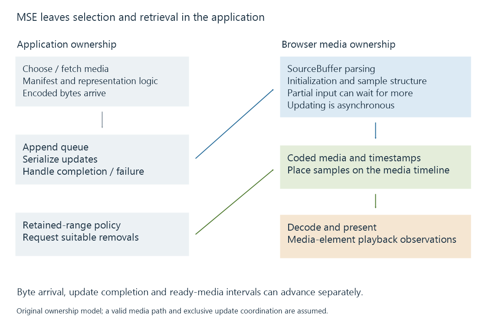

Media Source Extensions (MSE) and scripted media delivery
Media Source Extensions lets an application append supported encoded media byte streams to a browser playback path while coordinating buffering, timing and asynchronous updates.
Media Source Extensions, or MSE, lets a web application supply encoded media to the browser's playback engine. The application can fetch and select media intervals; the browser interprets a supported byte stream and performs decoding and presentation.
This is a useful boundary for a JavaScript HLS or DASH player. The JavaScript library can implement delivery and adaptation without implementing the video decoder itself.
The application chooses what to supply
A MediaSource is attached to a media element. The application adds one or more SourceBuffer objects for supported encoded-media configurations and appends data to them.

| Application responsibility | Browser media responsibility |
|---|---|
| Interpret the delivery description | Interpret an accepted media byte-stream format |
| Select tracks or representations | Maintain coded media and playback state |
| Fetch the required bytes | Decode supported samples |
| Schedule appends and removals | Present the selected timeline through the media element |
Retrieval, appending and presentation proceed at different times. A completed download is input for the append process, not proof that the samples have become playable.
Encoded bytes need the expected structure
A SourceBuffer is created with a supported media type and codec description. That is more precise than saying that the browser “supports MP4.”
For the ISO BMFF MSE byte-stream format, initialization supplies track and sample descriptions. Later media fragments supply fragment metadata and sample data. An arbitrary portion cut from the middle of an ordinary MP4 is not automatically a valid appendable fragment.
A player entering at another programme position therefore needs the appropriate initialization, timed media and decoding dependencies. A representation change can also require compatible configuration or supported reconfiguration.
The CMAF and HLS media segment pages develop the packaging relationships. MSE supplies the browser API boundary through which suitable bytes enter.
Appends are asynchronous operations
appendBuffer() begins processing the supplied data. During an update, SourceBuffer.updating is true, and incompatible overlapping operations can fail. A client needs a queue or another ownership arrangement to coordinate updates.
This original helper illustrates one serialized append. It assumes that the caller exclusively controls an existing, attached SourceBuffer and that the MediaSource is in an appropriate state. The supplied values are byte data, not resource URLs:
function appendOne(buffer, bytes) {
return new Promise((resolve, reject) => {
function clean() {
buffer.removeEventListener("updateend", done);
buffer.removeEventListener("error", failed);
buffer.removeEventListener("abort", failed);
}
function done() {
clean();
resolve();
}
function failed(event) {
clean();
reject(new Error("Append failed: " + event.type));
}
buffer.addEventListener("updateend", done);
buffer.addEventListener("error", failed);
buffer.addEventListener("abort", failed);
try {
buffer.appendBuffer(bytes);
} catch (error) {
clean();
reject(error);
}
});
}
await appendOne(sourceBuffer, initializationBytes);
await appendOne(sourceBuffer, firstMediaBytes);
The second call waits for the first operation to finish successfully. A synchronous exception or an asynchronous error/abort rejects the helper's promise and removes its listeners.
This selected example does not create a MediaSource, fetch data, choose codecs, retry operations or coordinate a complete player's queue. Its purpose is to show why returning from appendBuffer() is different from completing an append.
Byte arrival, append completion and media readiness
These three boundaries can advance separately. Initialization can append successfully while supplying no programme pictures at all. A later append can supply only part of a fragment or encoded sample, leaving the parser waiting for more bytes.
Imagine a selected four-second interval arriving in two pieces. In this original model, the first piece contains fragment information and an incomplete first sample; the second completes the required media. No complete sample exists before that second piece.
| Event | Accumulated input | Ready programme interval in the model |
|---|---|---|
| Initialization append completes | Track configuration | None |
| First media-piece append completes | Headers and partial sample data | None |
| Second media-piece append completes | Required interval data is complete | 0–4 seconds |
An update can finish processing the input it was given without making the entire intended media interval ready. Conversely, a suitable incremental byte stream can make some samples usable before the complete larger resource has arrived.
This is why an application's downloaded-byte counter, its append queue and the media element's buffered ranges describe different state. A player needs to preserve both the byte-stream parsing context and the programme-time relationships while more data arrives.
Media timestamps decide where samples belong
In timestamp-based segments mode, the media carries timestamps that establish sample placement. timestampOffset can transform the placement under the API's rules.
For an original simplified example, assume a valid media fragment has local presentation timestamps covering 0–4 seconds. With a suitable offset of twelve seconds, its intended placement becomes 12–16:
Presentation placement = local presentation time + offset
0 + 12 = 12
4 + 12 = 16
These numbers are programme-time relationships. Appending the bytes at wall-clock second fifty does not place the movie interval at programme second fifty.
sequence mode has different grouping behavior. The application must use the selected mode consistently rather than assume that every new append automatically belongs immediately after the last picture it saw.
Separate audio and video buffers also need compatible timing. Receiving audio first and video later can still produce synchronized output when their timestamps describe the same programme moments.
Retained media has a lifecycle
Long sessions can accumulate coded media that the player no longer needs. remove() lets an application request removal of ranges, coordinated with update state and decoding dependencies.
Buffer capacity is not a universal fixed number of seconds. Encoded byte size, tracks, browser implementation and device conditions matter. A QuotaExceededError at append time belongs to that resource/state context; requesting the same bytes again without changing the relevant condition need not solve it.
Removal can reduce retained data, while seeking or adaptation can create new retrieval and append work. A player must preserve the media and dependencies needed around the current and intended next positions.
End the source only when the presentation permits it
For a completed on-demand presentation, a player can signal the end of the supplied stream when the relevant SourceBuffers have finished updating and the MediaSource state permits it. A live presentation still expecting new media has a different lifecycle.
A decoder error, append error, exhausted delivery window and normal completion therefore have different evidence. In an Emby Web session, relating the media-element state to actual fetch and append results helps locate the stage at which the next usable interval stopped becoming available.
See Also
- Browser media playback and its loading paths
- HTML media elements, state and time ranges
- HLS media segments and initialization
- Common Media Application Format (CMAF)
- Adaptive bitrate streaming and representation selection
- Encrypted Media Extensions (EME) and browser key sessions